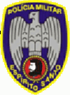

Oportunidades também na Polícia Militar do Espírito Santo, que abriu concurso para 680 vagas de policial militar, sendo que 30 destas são para Soldado Músico e o restante para Soldado Combatente. Para se inscrever é só visitar a página oficial da organizadora, a Cespe/UnB, nesta página para Soldado Combatente ou nesta página para Soldado Músico. O valor da taxa de inscrição é de R$ 55,00.
Inicialmente, o salário do novo policial militar, enquanto soldado combatente, será de R$ 892,50. Mas tão logo seja incorporado, passa a receber R$ 1.833,92.
Para Soldado Músico será cobrado na primeira fase (objetiva) conhecimentos de Português, Matemática, História e Geografia. Na segunda fase vêm as provas práticas, com o instrumento musical escolhido (tuba, trompete, trompa, sax, trombone, percussão, clarineta, flautin ou bombardino).
Já para Soldado Combatente, a prova será somente a objetiva, com as mesmas matérias. O nível de escolaridade mínimo para fazer o concurso é o 2º grau de instrução. A idade mínima é de 18 anos e a máxima de 28 anos de idade na data da inscrição; a altura mínima para candidatos do sexo masculino é 1,65m e para o sexo feminino 1,60m.
Aqui você pode baixar o edital do concurso para Soldado Combatente da PMES, e aqui o edital para Soldado Músico. Boa sorte, estude refazendo as provas do concurso anterior.